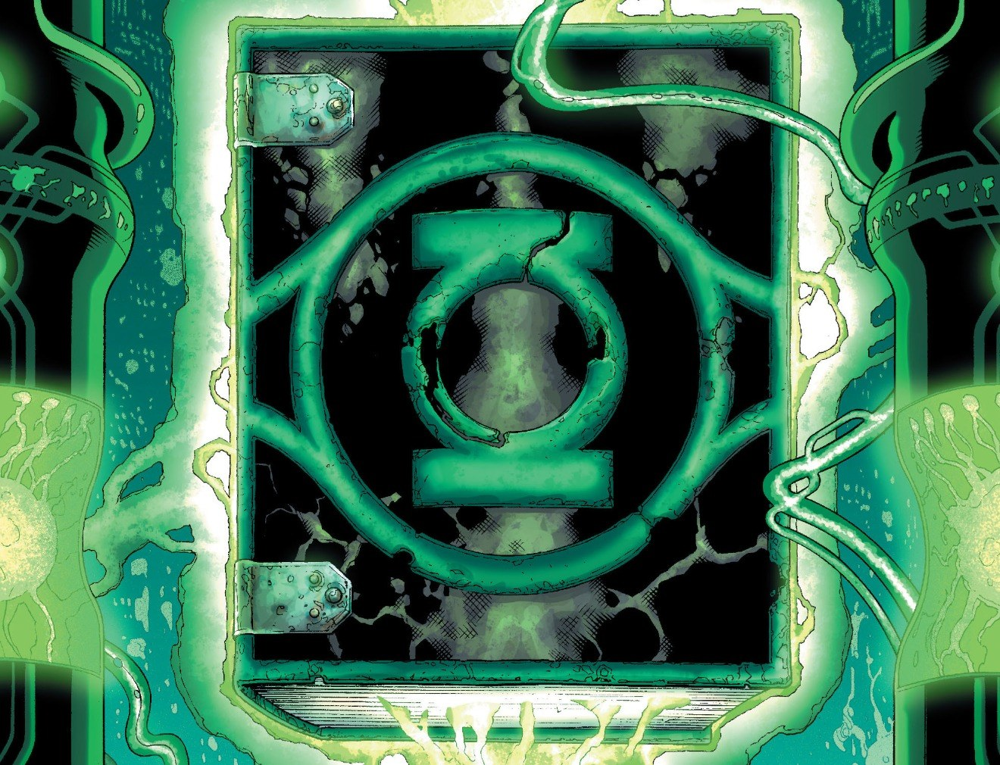

In-Universe History · 2008
The Book of Oa Is Rewritten
Ten new laws. Lethal force authorized. Sinestro's trap springs shut.

2008
The story
The Sinestro Corps War nearly destroyed the Green Lantern Corps — and it changed the Guardians who survived it. In desperation, they did what no Guardian had done in eons: they rewrote the Book of Oa, adding ten new laws to the Corps' most sacred text. The first authorized what had been unthinkable — lethal force against the Sinestro Corps. The second extended it to all enemies of the Corps. The old prohibitions fell away: love between Lanterns was forbidden, the Vega system was opened to Corps jurisdiction, and to enforce it all, the Guardians forged the cyborg Alpha Lanterns, their minds mainlined directly into the Book itself.
Then came the revelation that reframed the entire war. In Green Lantern vol. 4 #26 (February 2008, Johns and Mike McKone), Hal Jordan visited Sinestro in his Sciencell — and the prisoner explained, with terrible calm, that the war had been engineered. Sinestro had perpetuated the conflict precisely to manipulate the Guardians into enacting the lethal-force law. "Tell me, Jordan," he asked, "that you don't agree with this law?" Hal could only point out the irony: Sinestro now sat on death row under the very law he had maneuvered into existence.
The rewrite marked the moment the Guardians stopped being wise stewards and became frightened rulers — the first step down the road that would lead to the Third Army and their own execution. The Book of Oa, once a record of heroism, had become an instrument of fear. And fear, as Sinestro always knew, is the most honest foundation for order.
Illustration attribution under review. Artist and original source not fully established. Artwork source & details.
Artwork credits (1 image)
Credits refer to the illustrations shown here. Open a record for sources, adaptations and unresolved details. Some artwork and source pages contain story spoilers.
- Book Rewritten — Artist credit unconfirmed.